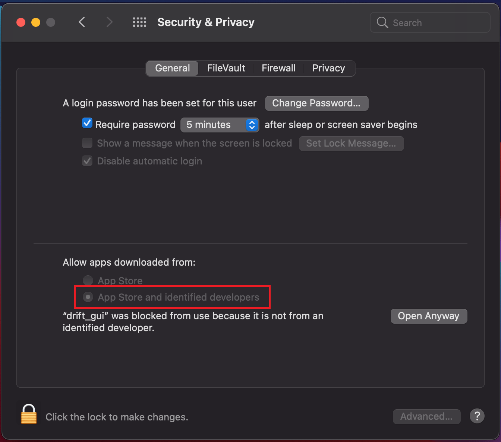
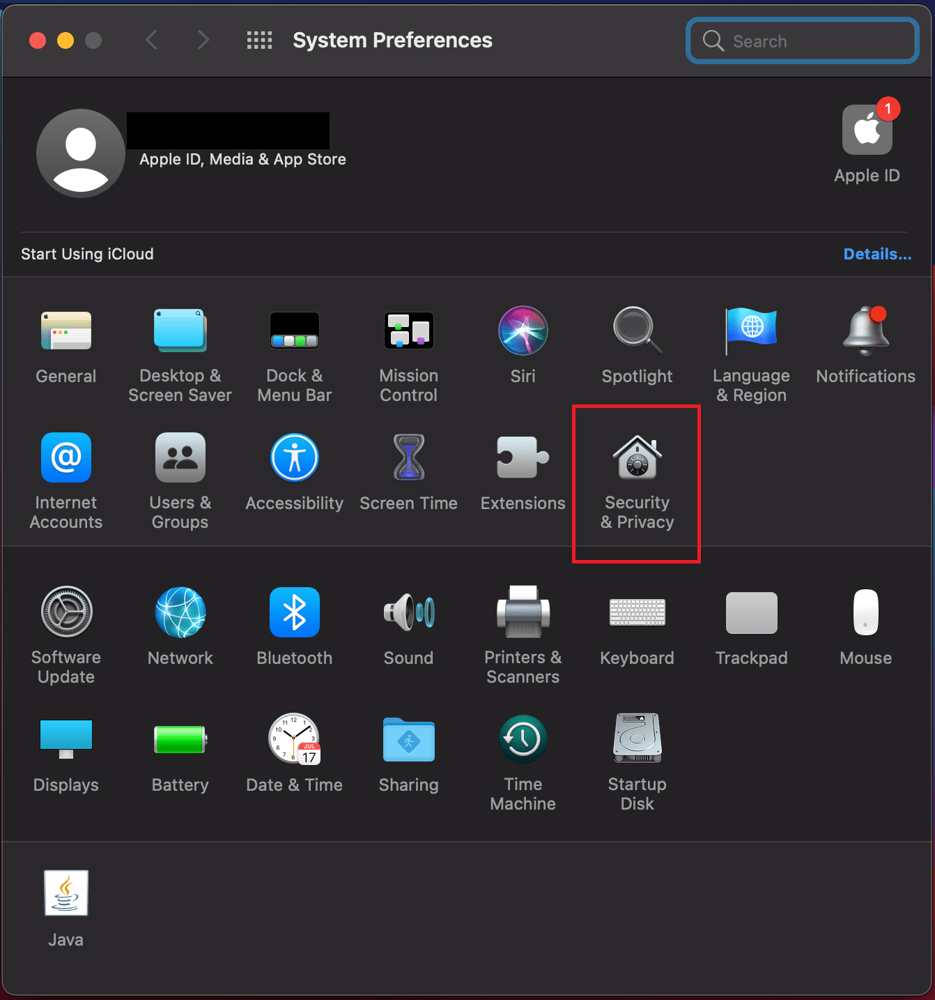
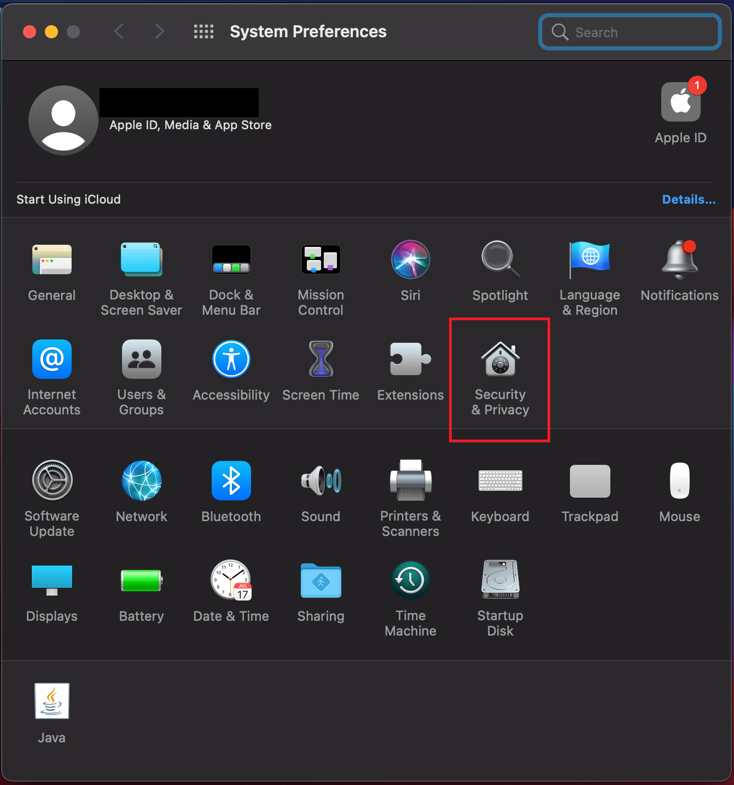
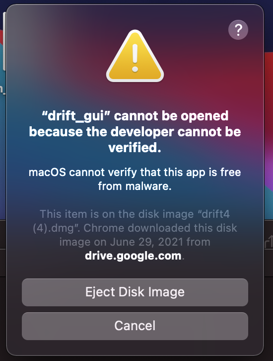
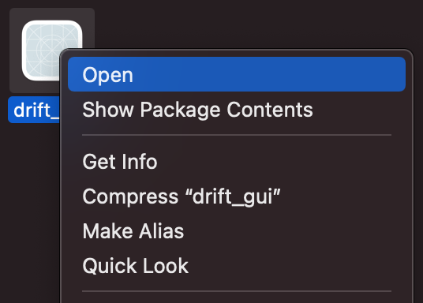
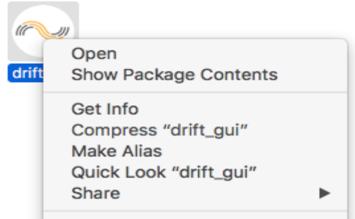
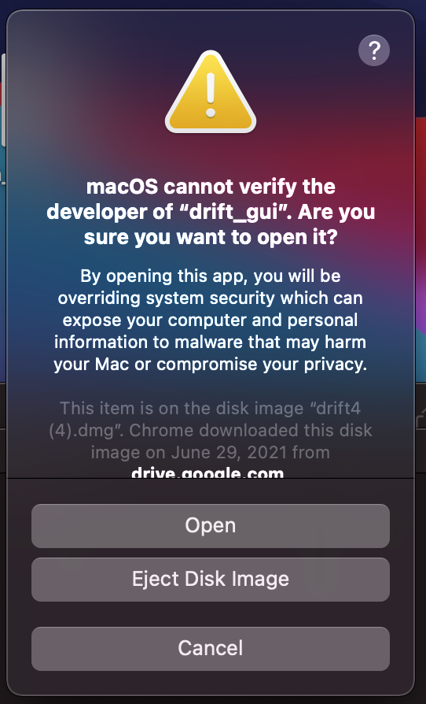
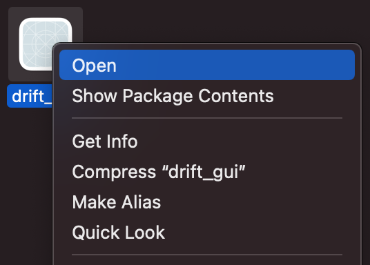
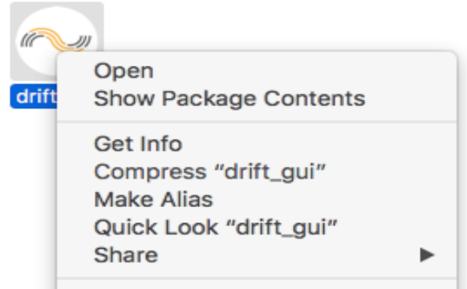
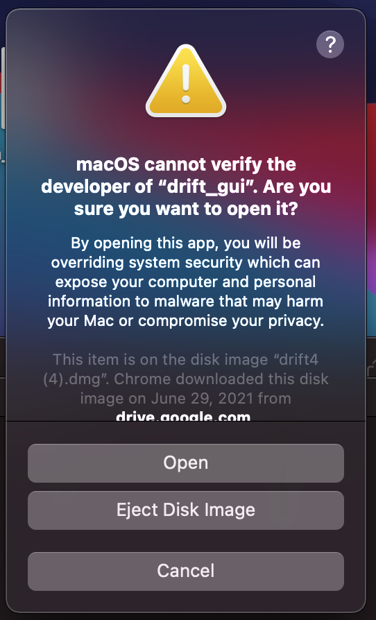

Video Tutorials
Launching the Drift application on Mac
MacUploading files to Drift
Mac Windows WebFeatures of a Drift document
Mac Windows WebLaunching Voxit on Mac
MacLaunching Voxit on Windows
WindowsLaunching Gentle on Mac
MacQuick Fixes
File won't load? A feature not working as expected? Try these common fixes in no particular order:
- Clear browser cookies/cache
- Change browsers (for the DMG version of Drift4, you can actually copy/paste the
localhosturl into another browser). Usually, Chrome works best. - Turn off AdBlock (for the DMG version, adding
localhostto AdBlock's whitelist can be tricky.Try turning off AdBlock temporarily in this case). - (Only for DMG) Make sure your computer allows apps opened from identified developers.
- Click the top-left Apple icon to open Mac options, and click the option "System Preferences".
- On the window that opens, click the option "Security & Privacy".
-
On the window that opens and underneath the section that says "Allow apps downloaded from:", make sure the option
"App Store and identified developers" is chosen.

- If this option is not chosen, click the lock icon on the bottom-left corner to enable changes (make sure to enter your system password if it asks for it).
- If you tried to open Drift4 before opening your system preferences, you might get the message "'drift_gui' was blocked from use because..." underneath this section, like as it appears in the image included. You can click "Open Anyway" (either before or after enabling the option to allow apps from identified developers) to open Drift4.
 

Opening Drift
- Install and open Gentle. Gentle must be installed and open in order for Drift to work.
-
Open the Drift application.
- When first running Drift after opening the dmg application, Mac might warn you against running it.
- When that happens, simply click “Cancel” (in Big Sur shown in the picture on the left) or “Ok” (in older versions of Mac shown in the picture to the right) to close the window. Then right-click or press the “Ctrl” key while left-clicking the Drift icon to bring up the “Open” option, and click on that.
- This time, an option to open the application should appear on the warning window, and you can click “Open” to run Drift.
  
 
- Click “Open in Browser.” The software should open on your default browser.
- Note: Before running an audio file through Drift, it is helpful to have a correct transcript of the recording, or a (manually) corrected transcript from Gentle. This will help generate more accurate calculations.
Adding Files
- Drag an audio file into the Drift interface. Or, you can click the “choose files” button and find the file by browsing on your computer.
- Paste in the corrected transcript generated from Gentle into the transcript box.
- Select “set transcript”. Drift should align the transcript with the audio file, and also perform calculations of the Voxit prosodic measures.
Arranging Files
- You can add a file to the dashboard by clicking on it from the sidebar. You can hide a file from the dashboard by clicking on it again
- You can rearrange the order of the files by dragging them along the sidebar to see a desired order
Voxit Prosodic Measures
- If you press play, the audio recording will play, and you can see a vertical bar called a “razor” move within the pitch contour. You can also press the spacebar to play or pause the most recent document (either the document most recently opened or the last one to have been played by clicking the “play” button, whichever was the most recent action). The overview along the top and the graph at the center will scroll according to where the razor moves to during playing.
- If you hover over the graph, a tag will appear on a razor indicating pitch and time. You can click on the graph to set the razor to a certain point in time.
- The Voxit prosodic measures for the whole region appear below the pitch contour.
- You can also select a smaller region within the large audio file, and Drift will perform the calculations on the selected region. You can do this by dragging along the overview at the top.
Downloading Audio File Data
- Click the three dots above each recording, and you can download the calculations as a .csv, .mat, or .txt file.
- Copy the Voxit prosodic measure table to your clipboard by hovering over the table and clicking the “Copy to Clipboard” button that appears.
- Download the graph as a PNG by hovering over the download icon in the top right corner of the graph.
Deleting Files
- You can delete a file by hovering over the three dots above each recording, and clicking on the “Delete Audioclip” button
- You can delete all of the audio files by hovering over the three dots on the left sidebar, then clicking on the “Delete All Audio” button.